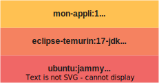

Dockerfile üêã et hop üöÄ, en prod !Dockerfile depuis 2015
FROM node:latest
COPY . .
RUN npm install
CMD ["npm", "start"]
FROM openjdk:latest
COPY . .
CMD ["./mvnw", "spring-boot:run"]

Dockerfile
FROM eclipse-temurin:17-jdk-focal
WORKDIR /app
COPY .mvn/ .mvn
COPY mvnw pom.xml ./
RUN ./mvnw dependency:go-offline
COPY src ./src
CMD ["./mvnw", "spring-boot:run"]
# build stage
FROM eclipse-temurin:17-jdk-alpine as build
WORKDIR /workspace/app
COPY mvnw .
COPY .mvn .mvn
COPY pom.xml .
COPY src src
RUN ./mvnw install -DskipTests
RUN mkdir -p target/dependency && (cd target/dependency; jar -xf ../*.jar)
# run stage
FROM eclipse-temurin:17-jdk-alpine
RUN addgroup -S demo && adduser -S demo -G demo
USER demo
VOLUME /tmp
ARG DEPENDENCY=/workspace/app/target/dependency
COPY --from=build ${DEPENDENCY}/BOOT-INF/lib /app/lib
COPY --from=build ${DEPENDENCY}/META-INF /app/META-INF
COPY --from=build ${DEPENDENCY}/BOOT-INF/classes /app
ENTRYPOINT ["java","-cp","app:app/ lib/*","hello.Application"]
Est-ce que ce Dockerfile était parfait ?
Est-ce qu'on attend d'un·e développeur·euse l'écriture d'un tel Dockerfile ?
Dockerfile ?Darren Shepherd  @ibuildthecloud
@ibuildthecloud
(former @Rancher_Labs, k3s creator)
So issues I have
— Darren Shepherd (@ibuildthecloud) June 27, 2023
1. Caching. I've been told this is hard. I believe there is stupider and more effective ways to (not) do it
2. Layers are soooo 2018
3. Multi stage is cool and all, but you really only need two stages (build env, run env)
4. COPY is kinda pointless. https://t.co/CcuB2Axd3G
You really can't build a properly good docker image without multi stage because you don't want your compiler in the final image. I think a better UX can be built assuming you basically always want to stages: build and run.
— Darren Shepherd (@ibuildthecloud) June 27, 2023
üêã DockerfileFROM)RUN)ENTRYPOINT)ENV)USER)üêã Dockerfile ?Dockerfile avec euxüêã Dockerfile, ou des tonnes de ü•¥ YAMLChaque projet a son propre Dockerfile, forc√©ment diff√©rent des autres
Quand les normes évoluent, ouvrir des change-request sur tous les projets de l'entreprise pour mettre à jour les Dockerfile
On parle d'image OCI depuis 2015 (Open Container Initiative) Normalisé : github.com/opencontainers/image-spec
Les layers :
distrib + runtime/middleware + code
JSON + tar.gz = üíô
{
"schemaVersion": 2,
"mediaType": "application/vnd.docker.distribution.manifest.v2+json",
"layers": [
{
"mediaType": "application/vnd.docker.image.rootfs.diff.tar.gzip",
"size": 30430275,
"digest": "sha256:d1669123f28121211977ed38e663dca1a397c0c001e5386598b96c89b1b1cd51"
},
{
"mediaType": "application/vnd.docker.image.rootfs.diff.tar.gzip",
"size": 17038759,
"digest": "sha256:2ec73b48ae406646223453ca41d5d6b7cb739853fb7a44f15d35a31c238271d2"
},
{
"mediaType": "application/vnd.docker.image.rootfs.diff.tar.gzip",
"size": 192587566,
"digest": "sha256:9dbb3ddf83e9096c0e2f32bfa93d16285d2e9586b1a9aa25e33d04cf01d521c7"
},
{
"mediaType": "application/vnd.docker.image.rootfs.diff.tar.gzip",
"size": 175,
"digest": "sha256:08d2567dd626029019cc940915699f23b075d05189d99319604fbdae3768fa36"
}
],
"config": {
"mediaType": "application/vnd.docker.container.image.v1+json",
"size": 6305,
"digest": "sha256:50440189b0f4cd6264c2f03f92acf4772680d864e3a0d422ef4c463733e139df"
}
}
On appelle ça un Manifest d'image
eclipse-temurin:17.0.8.1_1-jdk
{
"architecture": "amd64",
"config": {
"Hostname": "",
"Domainname": "",
"User": "",
"AttachStdin": false,
"AttachStdout": false,
"AttachStderr": false,
"Tty": false,
"OpenStdin": false,
"StdinOnce": false,
"Env": [
"PATH=/opt/java/openjdk/bin:/usr/local/sbin:/usr/local/bin:/usr/sbin:/usr/bin:/sbin:/bin",
"JAVA_HOME=/opt/java/openjdk",
"LANG=en_US.UTF-8",
"LANGUAGE=en_US:en",
"LC_ALL=en_US.UTF-8",
"JAVA_VERSION=jdk-17.0.7+7"
],
"Cmd": [
"jshell"
],
"Image": "sha256:1dcdc9129900e8da6859de2013f135eb56cc4b67e04ceda95e957b9555c865a2",
"Volumes": null,
"WorkingDir": "",
"Entrypoint": null,
"OnBuild": null,
"Labels": {
"org.opencontainers.image.ref.name": "ubuntu",
"org.opencontainers.image.version": "22.04"
}
},
"created": "2023-06-02T01:44:46.577735785Z",
"docker_version": "20.10.23",
"os": "linux",
"rootfs": {
"type": "layers",
"diff_ids": [
"sha256:966e94ab6e166fb358a208cfd8169d22dea352501c96700eb7f45092a2962ee6",
"sha256:c06103114e6ae337714908c1ee4fd815a6d6b364703cbea6050aa10bb82151ec",
"sha256:e9c496514aa7ec95474908ee8e0f00f1c20756740be194a097111801f77ba29b",
"sha256:be8cd3ceb782d42ec828a1e53b009d8f70e80c4a5ffa9912ec59349d0a761ce5"
]
}
}
Heureusement qu'ils n'ont pas choisi YAML
docker image inspect üîç
docker image inspect eclipse-temurin:17.0.8.1_1-jdk | bat -l json
tar.gzsha256JSONOn pouvait générer tout ça ?
On pourrait cr√©er des images OCI, sans avoir besoin de üêã Docker ou d'un Dockerfile !
ça veut aussi dire, qu'on peut modifier une image, juste en allant modifier son manifest
construit une image
contribue à une ou plusieurs layers dans la construction
image de base utilisée par le builder
image de base des futures images applicatives
/bin/detect : indique si le buildpack doit être activé/bin/build : contribue à la construction d'une ou plusieurs layers/workspace/bin/detect/bin/build/layer/layer sont exportées pour créer une image OCI !


.m2/, node_modules/, ...)rootLe CLI pack permet d'exécuter des builders, pour construire des images.
# installation du CLI avec apt
sudo add-apt-repository ppa:cncf-buildpacks/pack-cli
sudo apt-get update
sudo apt-get install pack-cli
# premiers secours
pack --help
# construction d'une image OCI !
pack build ma-jolie-image --builder paketobuildpacks/builder:base
(Cloud-Foundry / VMWare + Pivotal)
# paketo-base
docker container run --rm -t paketobuildpacks/builder:base ls /cnb/buildpacks
# paketo-tiny construit des image distroless
docker container run --rm -t paketobuildpacks/builder:tiny ls /cnb/buildpacks
# heroku
docker container run --rm -t heroku/builder:22 ls /cnb/buildpacks
# google
docker container run --rm -t gcr.io/buildpacks/builder:google-22 ls /cnb/buildpacks
# construction d'une image
pack build petclinic:demo --builder paketobuildpacks/builder:base
# parcours des layers construite avec dive
dive petclinic:demo
# inspection de l'image
docker image inspect petclinic:demo | bat -l json

Respecte les bonnes pratiques de layering de Spring Boot
Est plus légère que celle proposée par Spring Boot
REPOSITORY TAG IMAGE ID SIZE CREATED
petclinic dockerfile 3c06306a 409MB 7 minutes ago
petclinic demo c3448bd3 315MB 43 years ago

 Google App Engine
Google App Engine
 Google Cloud Run
Google Cloud Run
 Google Cloud Functions
Google Cloud Functions
 Spring Boot (mvn spring-boot:build-image)
Riff
Spring Boot (mvn spring-boot:build-image)
Riff
DockerfileSoftware Bill of Materials
Chaque buildpack contribue à la construction d'un SBoM dans une layer dédiée
C'est vos RSSI et vos RSO qui vont √™tre contents üòÉ
# extraction du SBOM
pack sbom download petclinic:demo -o sbom
tree sbom
À partir du même code source, produit strictement le même binaire / la même image, avec le même digest
sha256 !
Nécessite de mettre à "0" les dates des fichiers.
"Created": "1980-01-01T00:00:01Z"
REPOSITORY TAG IMAGE ID CREATED SIZE
petclinic demo c3448bd3501d 43 years ago 315MB
Ça évite de produire de "nouvelles" layers si du code n'a pas changé (exemple, les libs)
# pull d'une image construite précédemment
docker image pull rg.fr-par.scw.cloud/cloud-nord-buildpacks/petclinic:paketo-base
# comparaison des layers
docker image inspect petclinic:demo | jq '.[].RootFS'
docker image inspect rg.fr-par.scw.cloud/cloud-nord-buildpacks/petclinic:paketo-base | jq '.[].RootFS'
diff -s <(docker image inspect petclinic:demo | jq '.[].RootFS') <(docker image inspect rg.fr-par.scw.cloud/cloud-nord-buildpacks/petclinic:paketo-base | jq '.[].RootFS')
Les images buildées sur une CI et sur le poste développeur ont la même signature !
Les images buildées par deux pipelines de CI consécutifs sont identiques !
Oui, ça veut bien dire ce que vous imaginez !

pack rebase petclinic:demo --run-image <new-base-image>
Se fait au niveau du ✈️ Manifest
Implémenté par la plupart des builders sur la couche "distribution"
Permet de modifier les layers basses d'une image, sans avoir besoin de la reconstruire
Permet de patcher rapidement une image, sans rebuild
Choisir son image de base
Réutiliser des buildpacks existants
Implémenter les langages manquants
Permet d'étendre des builder / buildpacks sans avoir besoin de les modifier !
Installer un binaire dans la 'Build' ou 'Run' image
pack utilise Docker, ou PodmankpacktektonUn petit feedback ? =>